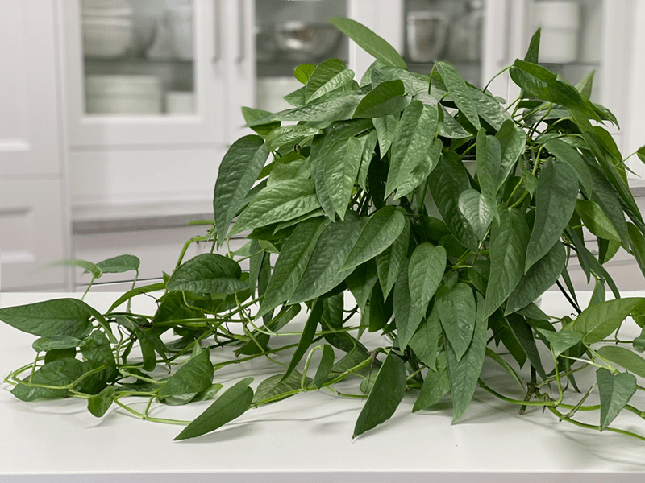
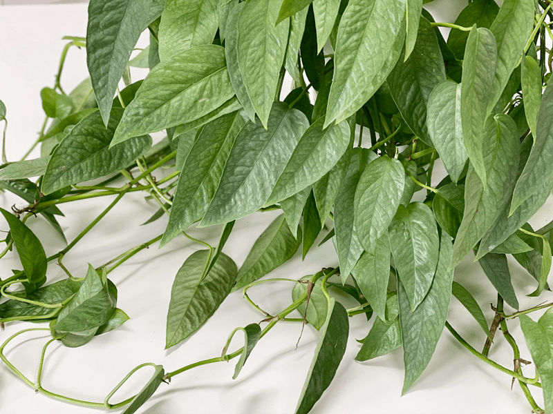
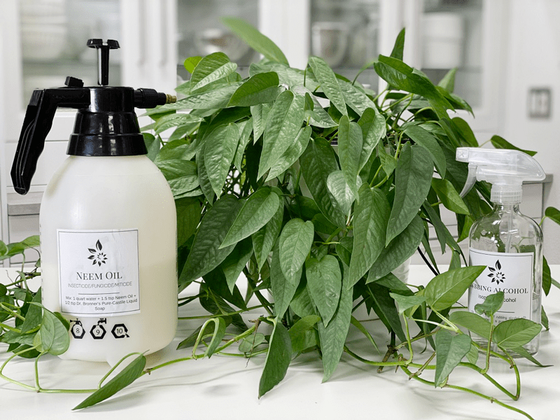
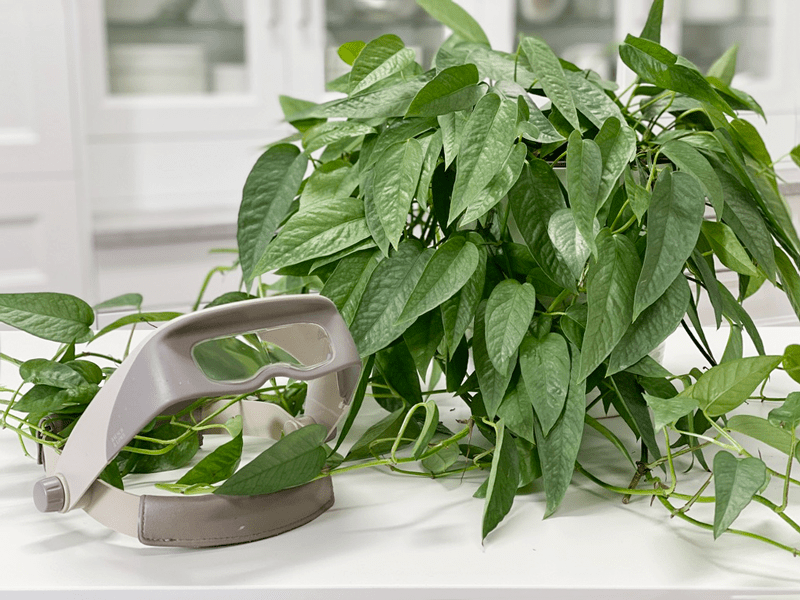
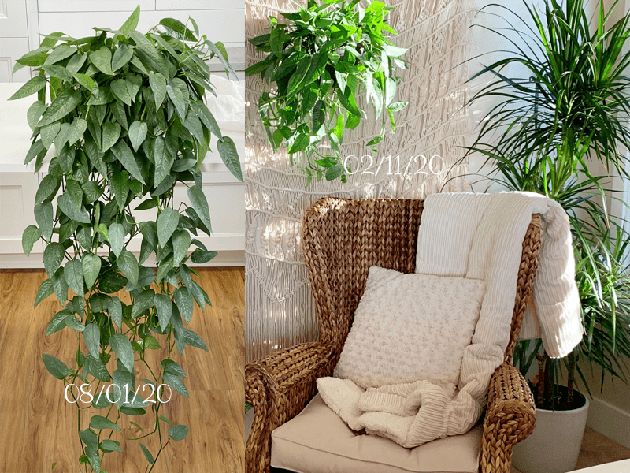
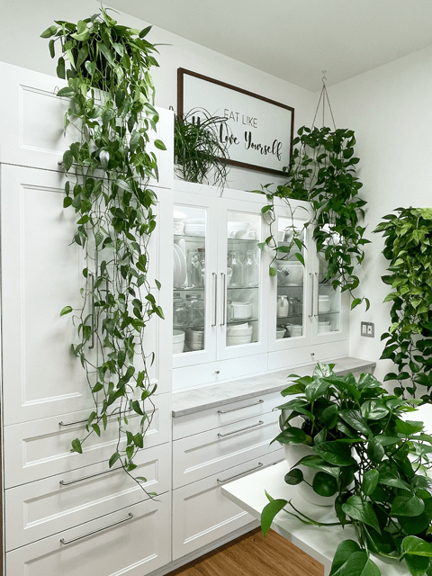

Pothos | Cebu Blue | Care Difficulty – Easy
The Cebu Blue pothos is a pretty and popular variety of pothos with shiny, silvery-blue leaves that seem to sparkle in the right light. The leaves are 2″ by 7″ long. I have to admit that I don’t see this variety all that often. I live an hour east of Portland, and the indoor plant selection is pretty bleak in our neck of the woods. Thankfully, I came across one during my travels in Portland.

When I came across it, I had no idea what it was or what it required…all I knew was I wanted it! The pot didn’t have a name, and after asking several employees, I still didn’t have any information about it. I loved it and was willing to take a gamble on it, so in the cart it went. Just before we were about to leave the store, a worker walked up and whispered in my ear that it was a Cebu Blue pothos plant. I made her repeat it about five times.
Light Requirements
My Cebu Blue does well in low light to bright light. It is best to keep it out of the direct sun, which will burn foliage. I keep mine in the bedroom, near an east-facing window. The light comes in filtered due to the large pine trees outside. If the vines on your plant have long spaces between leaves, that is an indication that your pothos is not getting enough sunlight.
Water Requirements
When it comes to watering, I find the pothos does best when their soil is allowed to dry out between waterings–not 100% dried out, though. Just like my other pothos plants, when it needs water, it is easy to tell. The leaves start to wilt. But they will perk up quickly when they get a good drink. Watching the leaves is an easy way to make sure this plant is getting the right amount of water. I water mine roughly once a week. I take the plant to the kitchen sink and water it until it starts dripping from the bottom of the pot.

Optimum Temperature
They prefer average to warm temperatures of 65-80 degrees (F). Do not expose it to temperatures below 65 degrees (F) even for a short time because cold air will damage the foliage. Avoid cold drafts and heat vents.
Fertilizer – Plant Food
Feed monthly in the spring through fall with general-purpose indoor plant fertilizer. Advice regarding frequency of plant feeding tends to be inconsistent. If you overfeed your plants, they will let you know. Here are a few things to watch for:
- Yellowing or browning leaves.
- The top surface of the soil may be white or crusty.
- The leaves of the plant will start dropping off.
- The roots can begin to rot.
If you overfeed a plant, you can remove the houseplant from its current soil and repot it in fresh soil. This technique is undoubtedly the best way to get rid of the excess nutrients affecting your plant. Alternatively, you can flush the soil, which involves drenching the soil with water and letting it drain out. Repeat this several times to help the soil get rid of excess fertilizer.
Additional Care
- Remove any dead, discolored, damaged, or diseased leaves and stems as they occur with clean, sharp scissors. Snip stems just above a leaf node; new growth will emerge from this cut. I do this every time I water my pothos. I use the watering time to inspect my plants thoroughly.
- Clean the leaves often enough to keep dust off of them. I like to put my plant in the tub and give it a shower. Doing this keeps the leaves free of pests and dust.

Plant Characteristics to Watch For
Diagnosing what is going wrong with your plant is going to take a little detective work, but even more patience! First of all, don’t panic and don’t throw out a plant prematurely. Take a few deep breaths and work down the list of possible issues. Below, I am going to share some typical symptoms that can arise. When I start to spot troubling signs on a plant, I take the plant into a room with good lighting, pull out my magnifiers, and begin by thoroughly inspecting the plant.
Stems are leggy, with few leaves.
- Stems that are allowed to grow longer than 4 ft often shed most of their leaves near the base of the plant.
- Solution: It’s a good idea to trim off long stems once in a while, to keep the pothos leafy and full. Stems that are mostly bare can be cut off at the soil level. Occasional watering lapses, age, and inadequate light are the most common causes of this leaf loss, so do your homework.
The base of the plant is looking sparse.
- If you allow the vines to grow long and never prune it, the top of the plant, in the pot, can become sparse.
- Solution: If the base of the plant is looking sparse, it is time to trim the vines, which will cause the plant base to become lusher. Cutting right after a leaf node (the place where the leaf is attached to the stem) will encourage the stem to branch out, giving you a fuller plant.
The leaves are soft and wilting.
- Wilting is caused by dry soil.
- Solution: Although the plant will quickly bounce back after a good drink, make sure to water it regularly. Frequent droughts can put the plant under a lot of stress.
Yellow leaves.
- Overwatering.
- Solution: Allow soil to dry out a bit between waterings.
Fungus gnats
- Fungus gnats are harmless, except if you want to keep your sanity. They love to hang out in front of your face, testing your will and composure. They love wet, peaty potting mixes. You’ll find these tiny black fly-like insects crawling on the soil.
- Solution: Check in on your watering habits. Keeping the soil too wet makes for a breeding ground for these gnats. There are several different treatments to help keep the population under control. Click (here) to learn more.
My plant is bushier on one side.
- If your plant is bushier on one side, rotate the plant periodically to ensure even growth on all sides and dust the leaves often so the plant can photosynthesize efficiently. When dusting the leaves, also take the opportunity to inspect the undersides, and keep an eye out for pests.

Common Bugs to Watch For
If you want to have healthy house plants, you MUST inspect them regularly. Every time I water a plant, I give it a quick look-over. Bugs/insects feeding on your plants reduces the plant sap and redirects nutrients from leaves. Some chew on the leaves, leaving holes in the leaves. Also watch for wilting or yellowing, distorted, or speckled leaves. They can quickly get out of hand and spread to your other plants.

IF you see ONE bug, trust me, there are more. So, take action right away. Some are brave enough to show their “faces” by hanging out on stems in plan sight. Others tend to hide out in the darnedest of places, like the crotch of a plant or in a leaf that has yet to unfurl.
- Mealybugs look like small balls of cotton. They can travel, slooooooowly, but they have a strong will and determination! Though they are slow-moving, if any plant is touching another, there is a chance the mealybug will hitch a ride on a new leaf and spread. They breed like rabbits of the insect world. Females can deposit around 600 eggs in loose cottony masses, often on the underside of leaves or along stems.
- Scales are dark-colored bumps that are primarily immobile insects that stick themselves to stems and leaves. They are rather inconspicuous and don’t look like a typical insect. They can range in color but are most often brownish in appearance. They’re called “scales” primarily due to their scale-like appearance on a plant, due to waxy or armored coverings. They are often seen in clumps along a stem, sucking away at the plant’s juices with their spiky mouthpart.
- Spider mites are more common on houseplants. They are not insects – they are related to spiders. These appear to be tiny black or red moving dots. Spider mites are nearly invisible to the naked eye. You often need a magnifying lens to spot them, or you may just notice a reddish film across the bottom of the leaves, some webbing, or even some leaf damage, which usually results in reddish-brown spots on the leaf.

Update on plant growth. I bought this plant 2/11/20 and had it in the bedroom for a few months but then moved it to my kitchen studio where the only light provided is overhead fluorescent lighting. As you can see on the left side of the photo… it is thriving and growing tremendously.

Update photo 6/30/21 (after I trimmed the vines) As you can see the plant lost some of its fullness at the top due to the vines growing long. I will continue to shorten the vines (propagating the leaves) to help prompt the plant to push out new growth up top.
Toxicity
The pothos plant can cause complications for your pet, ranging from mild (irritation of the lips) to severe (breathing difficulties due to a swollen tongue). If you witness your dog ingesting this plant, contact your veterinarian immediately.
© AmieSue.com